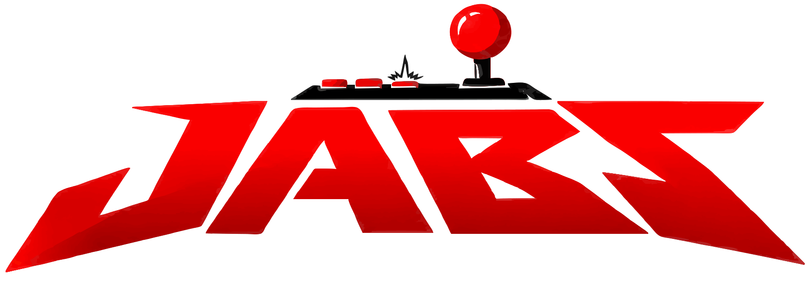
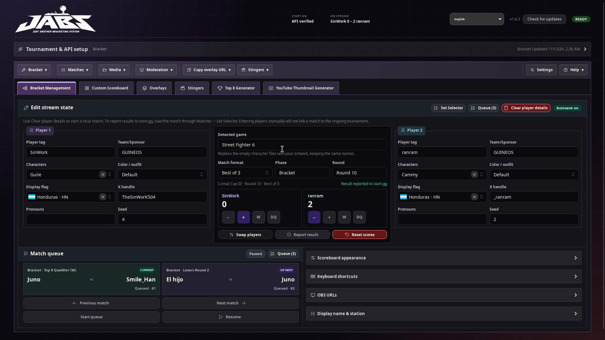
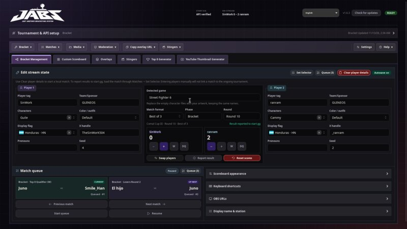
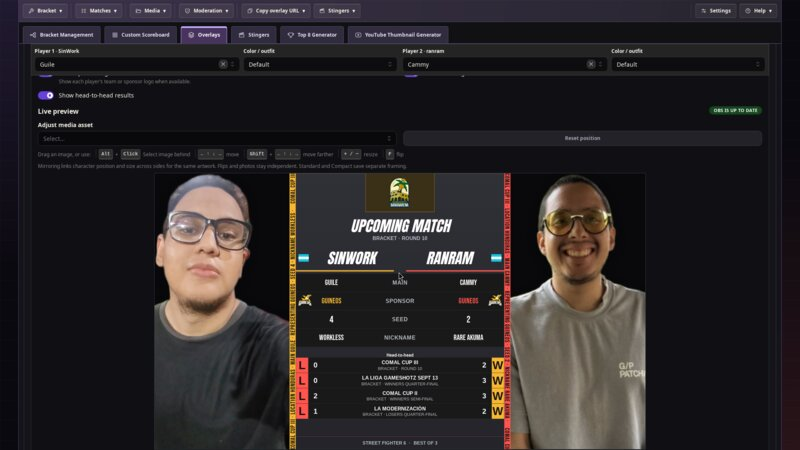
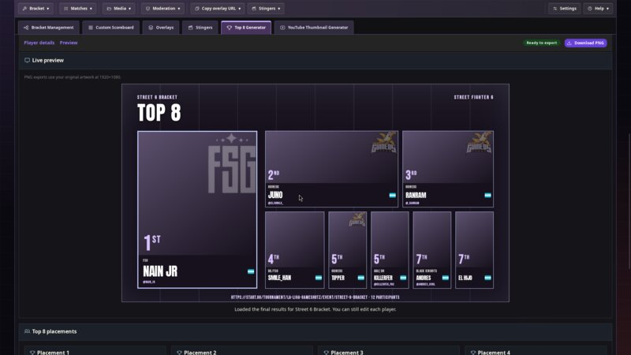
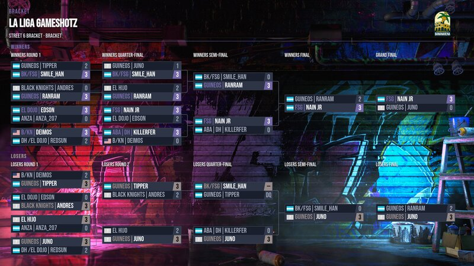
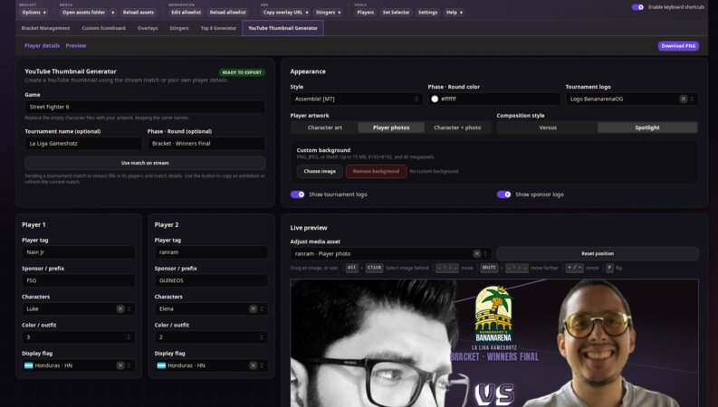

Brackets
Load a start.gg bracket, queue stream matches, and report results. You can also run exhibitions.

DOWNLOADEN/ES

Load a start.gg bracket, queue stream matches, and report results. You can also run exhibitions.
Send scores and match details to OBS. Add your own artwork and fonts.
Create Top 8 graphics and YouTube thumbnails with saved player photos and character choices.





Enter a start.gg tournament URL and select your event and match. Or start an exhibition.
Copy an overlay URL into an OBS Browser Source at 1920 × 1080.
Keep JABS running, update scores, and send the next match to stream.